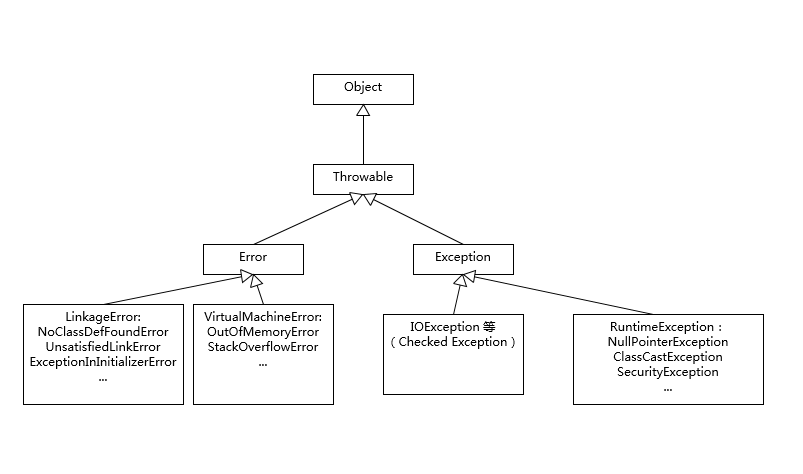

- 00 开篇词 以面试题为切入点，有效提升你的Java内功.md.html
- 01 谈谈你对Java平台的理解？.md.html
- 02 Exception和Error有什么区别？.md.html
- 03 谈谈final、finally、 finalize有什么不同？.md.html
- 04 强引用、软引用、弱引用、幻象引用有什么区别？.md.html
- 05 String、StringBuffer、StringBuilder有什么区别？.md.html
- 06 动态代理是基于什么原理？.md.html
- 07 int和Integer有什么区别？.md.html
- 08 对比Vector、ArrayList、LinkedList有何区别？.md.html
- 09 对比Hashtable、HashMap、TreeMap有什么不同？.md.html
- 10 如何保证集合是线程安全的_ ConcurrentHashMap如何实现高效地线程安全？.md.html
- 11 Java提供了哪些IO方式？ NIO如何实现多路复用？.md.html
- 12 Java有几种文件拷贝方式？哪一种最高效？.md.html
- 13 谈谈接口和抽象类有什么区别？.md.html
- 14 谈谈你知道的设计模式？.md.html
- 15 synchronized和ReentrantLock有什么区别呢？.md.html
- 16 synchronized底层如何实现？什么是锁的升级、降级？.md.html
- 17 一个线程两次调用start()方法会出现什么情况？.md.html
- 18 什么情况下Java程序会产生死锁？如何定位、修复？.md.html
- 19 Java并发包提供了哪些并发工具类？.md.html
- 20 并发包中的ConcurrentLinkedQueue和LinkedBlockingQueue有什么区别？.md.html
- 21 Java并发类库提供的线程池有哪几种？ 分别有什么特点？.md.html
- 22 AtomicInteger底层实现原理是什么？如何在自己的产品代码中应用CAS操作？.md.html
- 23 请介绍类加载过程，什么是双亲委派模型？.md.html
- 24 有哪些方法可以在运行时动态生成一个Java类？.md.html
- 25 谈谈JVM内存区域的划分，哪些区域可能发生OutOfMemoryError_.md.html
- 26 如何监控和诊断JVM堆内和堆外内存使用？.md.html
- 27 Java常见的垃圾收集器有哪些？.md.html
- 28 谈谈你的GC调优思路_.md.html
- 29 Java内存模型中的happen-before是什么？.md.html
- 30 Java程序运行在Docker等容器环境有哪些新问题？.md.html
- 31 你了解Java应用开发中的注入攻击吗？.md.html
- 32 如何写出安全的Java代码？.md.html
- 33 后台服务出现明显“变慢”，谈谈你的诊断思路？.md.html
- 34 有人说“Lambda能让Java程序慢30倍”，你怎么看？.md.html
- 35 JVM优化Java代码时都做了什么？.md.html
- 36 谈谈MySQL支持的事务隔离级别，以及悲观锁和乐观锁的原理和应用场景？.md.html
- 37 谈谈Spring Bean的生命周期和作用域？.md.html
- 38 对比Java标准NIO类库，你知道Netty是如何实现更高性能的吗？.md.html
- 39 谈谈常用的分布式ID的设计方案？Snowflake是否受冬令时切换影响？.md.html
- 周末福利 谈谈我对Java学习和面试的看法.md.html
- 结束语 技术没有终点.md.html
- 捐赠
02 Exception和Error有什么区别？
世界上存在永远不会出错的程序吗？也许这只会出现在程序员的梦中。随着编程语言和软件的诞生，异常情况就如影随形地纠缠着我们，只有正确处理好意外情况，才能保证程序的可靠性。
Java语言在设计之初就提供了相对完善的异常处理机制，这也是Java得以大行其道的原因之一，因为这种机制大大降低了编写和维护可靠程序的门槛。如今，异常处理机制已经成为现代编程语言的标配。
今天我要问你的问题是，请对比Exception和Error，另外，运行时异常与一般异常有什么区别？
典型回答
Exception和Error都是继承了Throwable类，在Java中只有Throwable类型的实例才可以被抛出（throw）或者捕获（catch），它是异常处理机制的基本组成类型。
Exception和Error体现了Java平台设计者对不同异常情况的分类。Exception是程序正常运行中，可以预料的意外情况，可能并且应该被捕获，进行相应处理。
Error是指在正常情况下，不大可能出现的情况，绝大部分的Error都会导致程序（比如JVM自身）处于非正常的、不可恢复状态。既然是非正常情况，所以不便于也不需要捕获，常见的比如OutOfMemoryError之类，都是Error的子类。
Exception又分为可检查（checked）异常和不检查（unchecked）异常，可检查异常在源代码里必须显式地进行捕获处理，这是编译期检查的一部分。前面我介绍的不可查的Error，是Throwable不是Exception。
不检查异常就是所谓的运行时异常，类似 NullPointerException、ArrayIndexOutOfBoundsException之类，通常是可以编码避免的逻辑错误，具体根据需要来判断是否需要捕获，并不会在编译期强制要求。
考点分析
分析Exception和Error的区别，是从概念角度考察了Java处理机制。总的来说，还处于理解的层面，面试者只要阐述清楚就好了。
我们在日常编程中，如何处理好异常是比较考验功底的，我觉得需要掌握两个方面。
第一，理解Throwable、Exception、Error的设计和分类。比如，掌握那些应用最为广泛的子类，以及如何自定义异常等。
很多面试官会进一步追问一些细节，比如，你了解哪些Error、Exception或者RuntimeException？我画了一个简单的类图，并列出来典型例子，可以给你作为参考，至少做到基本心里有数。

其中有些子类型，最好重点理解一下，比如NoClassDefFoundError和ClassNotFoundException有什么区别，这也是个经典的入门题目。
第二，理解Java语言中操作Throwable的元素和实践。掌握最基本的语法是必须的，如try-catch-finally块，throw、throws关键字等。与此同时，也要懂得如何处理典型场景。
异常处理代码比较繁琐，比如我们需要写很多千篇一律的捕获代码，或者在finally里面做一些资源回收工作。随着Java语言的发展，引入了一些更加便利的特性，比如try-with-resources和multiple catch，具体可以参考下面的代码段。在编译时期，会自动生成相应的处理逻辑，比如，自动按照约定俗成close那些扩展了AutoCloseable或者Closeable的对象。
try (BufferedReader br = new BufferedReader(…);
BufferedWriter writer = new BufferedWriter(…)) {// Try-with-resources
// do something
catch ( IOException | XEception e) {// Multiple catch
// Handle it
}
知识扩展
前面谈的大多是概念性的东西，下面我来谈些实践中的选择，我会结合一些代码用例进行分析。
先开看第一个吧，下面的代码反映了异常处理中哪些不当之处？
try {
// 业务代码
// …
Thread.sleep(1000L);
} catch (Exception e) {
// Ignore it
}
这段代码虽然很短，但是已经违反了异常处理的两个基本原则。
第一，尽量不要捕获类似Exception这样的通用异常，而是应该捕获特定异常，在这里是Thread.sleep()抛出的InterruptedException。
这是因为在日常的开发和合作中，我们读代码的机会往往超过写代码，软件工程是门协作的艺术，所以我们有义务让自己的代码能够直观地体现出尽量多的信息，而泛泛的Exception之类，恰恰隐藏了我们的目的。另外，我们也要保证程序不会捕获到我们不希望捕获的异常。比如，你可能更希望RuntimeException被扩散出来，而不是被捕获。
进一步讲，除非深思熟虑了，否则不要捕获Throwable或者Error，这样很难保证我们能够正确程序处理OutOfMemoryError。
第二，不要生吞（swallow）异常。这是异常处理中要特别注意的事情，因为很可能会导致非常难以诊断的诡异情况。
生吞异常，往往是基于假设这段代码可能不会发生，或者感觉忽略异常是无所谓的，但是千万不要在产品代码做这种假设！
如果我们不把异常抛出来，或者也没有输出到日志（Logger）之类，程序可能在后续代码以不可控的方式结束。没人能够轻易判断究竟是哪里抛出了异常，以及是什么原因产生了异常。
再来看看第二段代码
try {
// 业务代码
// …
} catch (IOException e) {
e.printStackTrace();
}
这段代码作为一段实验代码，它是没有任何问题的，但是在产品代码中，通常都不允许这样处理。你先思考一下这是为什么呢？
我们先来看看printStackTrace()的文档，开头就是“Prints this throwable and its backtrace to the standard error stream”。问题就在这里，在稍微复杂一点的生产系统中，标准出错（STERR）不是个合适的输出选项，因为你很难判断出到底输出到哪里去了。
尤其是对于分布式系统，如果发生异常，但是无法找到堆栈轨迹（stacktrace），这纯属是为诊断设置障碍。所以，最好使用产品日志，详细地输出到日志系统里。
我们接下来看下面的代码段，体会一下Throw early, catch late原则。
public void readPreferences(String fileName){
//...perform operations...
InputStream in = new FileInputStream(fileName);
//...read the preferences file...
}
如果fileName是null，那么程序就会抛出NullPointerException，但是由于没有第一时间暴露出问题，堆栈信息可能非常令人费解，往往需要相对复杂的定位。这个NPE只是作为例子，实际产品代码中，可能是各种情况，比如获取配置失败之类的。在发现问题的时候，第一时间抛出，能够更加清晰地反映问题。
我们可以修改一下，让问题“throw early”，对应的异常信息就非常直观了。
public void readPreferences(String filename) {
Objects. requireNonNull(filename);
//...perform other operations...
InputStream in = new FileInputStream(filename);
//...read the preferences file...
}
至于“catch late”，其实是我们经常苦恼的问题，捕获异常后，需要怎么处理呢？最差的处理方式，就是我前面提到的“生吞异常”，本质上其实是掩盖问题。如果实在不知道如何处理，可以选择保留原有异常的cause信息，直接再抛出或者构建新的异常抛出去。在更高层面，因为有了清晰的（业务）逻辑，往往会更清楚合适的处理方式是什么。
有的时候，我们会根据需要自定义异常，这个时候除了保证提供足够的信息，还有两点需要考虑：
- 是否需要定义成Checked Exception，因为这种类型设计的初衷更是为了从异常情况恢复，作为异常设计者，我们往往有充足信息进行分类。
- 在保证诊断信息足够的同时，也要考虑避免包含敏感信息，因为那样可能导致潜在的安全问题。如果我们看Java的标准类库，你可能注意到类似java.net.ConnectException，出错信息是类似“ Connection refused (Connection refused)”，而不包含具体的机器名、IP、端口等，一个重要考量就是信息安全。类似的情况在日志中也有，比如，用户数据一般是不可以输出到日志里面的。
业界有一种争论（甚至可以算是某种程度的共识），Java语言的Checked Exception也许是个设计错误，反对者列举了几点：
Checked Exception的假设是我们捕获了异常，然后恢复程序。但是，其实我们大多数情况下，根本就不可能恢复。Checked Exception的使用，已经大大偏离了最初的设计目的。
Checked Exception不兼容functional编程，如果你写过Lambda/Stream代码，相信深有体会。
很多开源项目，已经采纳了这种实践，比如Spring、Hibernate等，甚至反映在新的编程语言设计中，比如Scala等。 如果有兴趣，你可以参考：
http://literatejava.com/exceptions/checked-exceptions-javas-biggest-mistake/。
当然，很多人也觉得没有必要矫枉过正，因为确实有一些异常，比如和环境相关的IO、网络等，其实是存在可恢复性的，而且Java已经通过业界的海量实践，证明了其构建高质量软件的能力。我就不再进一步解读了，感兴趣的同学可以点击链接，观看Bruce Eckel在2018年全球软件开发大会QCon的分享Failing at Failing: How and Why We’ve Been Nonchalantly Moving Away From Exception Handling。
我们从性能角度来审视一下Java的异常处理机制，这里有两个可能会相对昂贵的地方：
try-catch代码段会产生额外的性能开销，或者换个角度说，它往往会影响JVM对代码进行优化，所以建议仅捕获有必要的代码段，尽量不要一个大的try包住整段的代码；与此同时，利用异常控制代码流程，也不是一个好主意，远比我们通常意义上的条件语句（if/else、switch）要低效。
Java每实例化一个Exception，都会对当时的栈进行快照，这是一个相对比较重的操作。如果发生的非常频繁，这个开销可就不能被忽略了。
所以，对于部分追求极致性能的底层类库，有种方式是尝试创建不进行栈快照的Exception。这本身也存在争议，因为这样做的假设在于，我创建异常时知道未来是否需要堆栈。问题是，实际上可能吗？小范围或许可能，但是在大规模项目中，这么做可能不是个理智的选择。如果需要堆栈，但又没有收集这些信息，在复杂情况下，尤其是类似微服务这种分布式系统，这会大大增加诊断的难度。
当我们的服务出现反应变慢、吞吐量下降的时候，检查发生最频繁的Exception也是一种思路。关于诊断后台变慢的问题，我会在后面的Java性能基础模块中系统探讨。
今天，我从一个常见的异常处理概念问题，简单总结了Java异常处理的机制。并结合代码，分析了一些普遍认可的最佳实践，以及业界最新的一些异常使用共识。最后，我分析了异常性能开销，希望对你有所帮助。
一课一练
关于今天我们讨论的题目你做到心中有数了吗？可以思考一个问题，对于异常处理编程，不同的编程范式也会影响到异常处理策略，比如，现在非常火热的反应式编程（Reactive Stream），因为其本身是异步、基于事件机制的，所以出现异常情况，决不能简单抛出去；另外，由于代码堆栈不再是同步调用那种垂直的结构，这里的异常处理和日志需要更加小心，我们看到的往往是特定executor的堆栈，而不是业务方法调用关系。对于这种情况，你有什么好的办法吗？
请你在留言区分享一下你的解决方案，我会选出经过认真思考的留言，送给你一份学习鼓励金，欢迎你与我一起讨论。
你的朋友是不是也在准备面试呢？你可以“请朋友读”，把今天的题目分享给好友，或许你能帮到他。
© 2019 - 2023 Liangliang Lee. Powered by gin and hexo-theme-book.